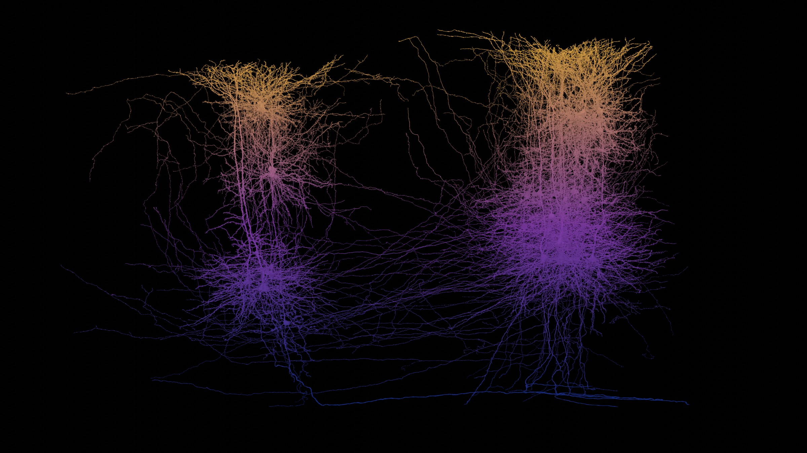

microns mouse visual cortexa second dataset
The same measured geometry, a different piece of brain. These are proofread neurons from the MICrONS volume, coloured by how deep they sit.
34 somata by depth, 429 to 910 µm below the pia
CAVE · minnie65_phase3_v1 · nuclei mat 1853 · synapses and types mat 1855 · 4×4×40 nm
Every fully proofread neuron I hold from the MICrONS mouse visual cortex volume, 38 of them, seen side on with the pia at the top. Colour is not a property of the cell. It is position: every point on every arbor is tinted by its own depth below the surface, so one pyramidal neuron reads gold where its apical tuft reaches layer 1 and blue where its soma and basal dendrites sit deep. Nothing draws the layers in. They appear because that is where the cell bodies are.
These cells were chosen because they are proofread, not because they are a sample of anything. A neuron earns that status by a person checking it, so this is a picture of 38 well traced cells, not of a cortical column. Real cortex at this depth holds tens of thousands of neurons in the same space.
Nine of the mesh identifiers had gone stale since they were downloaded, because proofreading keeps merging and splitting segments, and were resolved forward through the chunked graph before the somata were looked up. Four cells have no nucleus in the table and carry no soma marker.
The volume these cells were traced in is about a cubic millimetre of mouse primary visual cortex. It is worth seeing what that is a millimetre of. Both surfaces below are measured, not modelled, and they are drawn in one space at their true relative size. Drag either one to turn it; they turn separately, because turning them together tells you nothing about either.
two brains, one spacetrue relative size
Surfaces load when you reach them
Human cortex and cerebellum Mouse brain Mouse V1, inside the brain, where this volume was cut
The two buttons are for a keyboard: focus one and the arrow keys turn that brain, with shift for a bigger step. Every figure above is arithmetic on the bounding boxes recorded beside the meshes, so it moves if the surfaces are ever re exported.
The 38 cells in the picture at the top were chosen for being proofread, not for being a spread of types, and painting them by depth deliberately says nothing about what any of them is. These nine are reconstructions of nine different kinds of cell from the same volume, each one shown whole. Two of them are not neurons at all, which is the reason they are here: a cubic millimetre of cortex is not made only of neurons.
nine cells, one volumedrag to turn, scroll to zoom
Meshes load when you reach them
Each cell is framed to the same size on screen so the shapes can be compared. Their real extents differ by more than a factor of ten, and that number is in the readout rather than in the framing.
Everything above is anatomy holding still. These two are the same tissue doing something. The first is one spike crossing one synapse, along the two cells' own skeletons rather than along a line drawn between them. The second is thirty seconds of activity that was actually recorded, played back on the cells it was recorded from.
one spike, one synapsethe route is measured
Both cells load when you reach them
Presynaptic cell, the one that fires Postsynaptic cell, the one that receives The synapse, and the origin of this scene
What this animation is not. There is no membrane model behind it: no millivolts, no channel kinetics, no refractory period. The spark takes four seconds to cross those two and a bit millimetres because that is long enough to watch, and a real spike would cross them in a few thousandths of a second. What is measured is the route and the distances. Both meshes were re extracted in one frame centred on the synapse, so the bright green point is a real place in a mouse brain.
thirty seconds that happenedmeasured, not simulated
Traces load when you reach them
Each dot is one cell's soma at its own coordinate in the volume, coloured by depth on the same ramp as the picture at the top, and brightened by its own recorded fluorescence. A calcium trace is not a spike. It follows spiking slowly, so a bright cell is one that fired recently, and the rise and fall you are watching belong to the indicator rather than to the membrane. The reconstructed arbors of all 108 are here as well, compressed from 118 megabytes to 13, and lit by the same traces.
The two views swap rather than stack, on purpose. The dataset gives each cell a soma coordinate and an arbor mesh, and for 55 of the 108 they agree, the soma landing a median 33 µm from the nearest point on its own branches. For the other 39 they disagree by more than 100 µm, out to 702, so one of the two has gone stale against a later segmentation. That is the same drift that left nine of this page's 38 identifiers needing to be resolved forward. Each layer is sound on its own, since the mesh and the trace share a segment id and the soma and the trace share a manifest row. Drawn together they would put 39 dots visibly adrift from their own branches, so you get one or the other.
minnie65_phase3_v1.